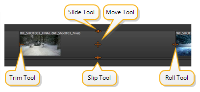

与其他可用的编辑工具不同, 多工具 根据指针相对于所选剪辑实例的位置，更改功能。

的 多工具 的功能相当于大多数其他工具的组合，但不需要模态工具选择:
• 移动 -将鼠标放置在剪辑实例的中心将激活该工具。将选定的剪辑实例拖到时间轴上所需的位置。
• 修剪 -将鼠标放置在剪辑实例的左侧或右侧会激活该工具。将编辑点拖动到新位置，然后释放鼠标以完成修剪。
请参阅 使用移动/修剪工具 欲了解更多信息。
• 选择 -点击并拖动选择剪辑。保持 转变 要添加到您的选择或 Alt 减去。
请参阅 使用选择工具 欲了解更多信息。
• 滑 -将鼠标放置在剪辑实例的底部会激活工具并显示滑动手柄。将剪辑实例拖到新位置，然后释放鼠标以完成滑动。
请参阅 使用滑夹工具 欲了解更多信息。
• 幻灯片 -将鼠标放置在剪辑实例的顶部会激活该工具并显示幻灯片手柄。将剪辑实例拖到新位置，然后释放鼠标以完成幻灯片。
请参阅 使用幻灯片剪辑工具 欲了解更多信息。
• 滚动 -将鼠标放在剪辑实例之间的编辑上激活工具并显示控制柄。将编辑拖到新位置，然后释放鼠标完成滚动。
请参阅 使用滚动编辑工具 欲了解更多信息。
• 剃刀 -当使用多工具时，剃刀切割是菜单驱动的。导航到 时间线 > 剃刀选择 或 剃刀所有 在当前播放头位置进行切割。
请参阅 使用剃刀和连接工具 欲了解更多信息。
|
|